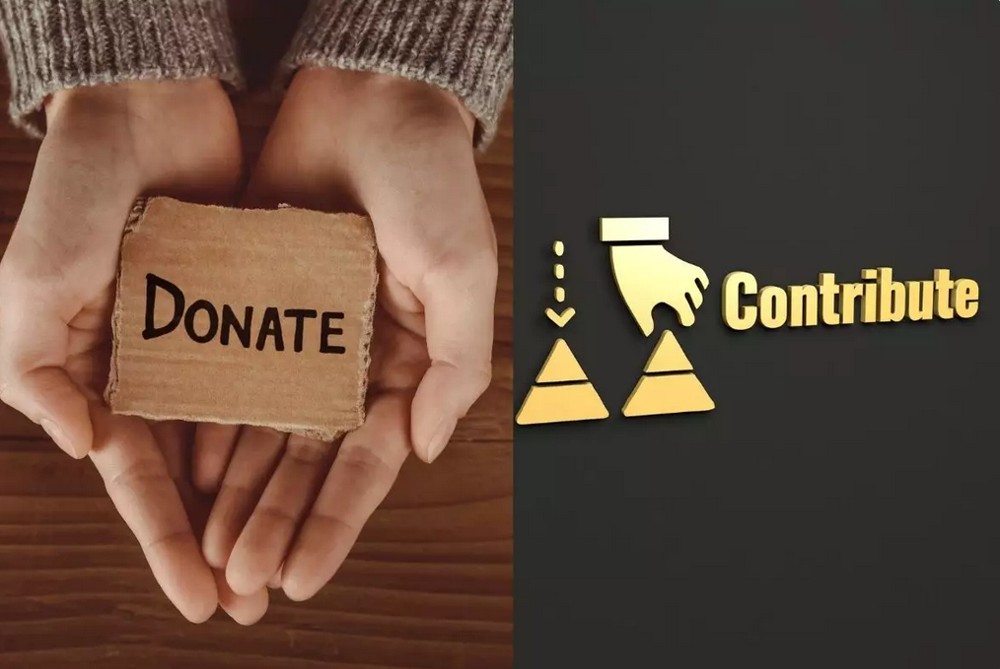

donieren
Voorstellen
In een wereld waar interactieve media een centrale rol speelt in ons dagelijks leven,
ontstaat het krachtige principe van "Donate to Play."
Dit principe omarmt de gedachte dat spelplezier niet alleen draait om persoonlijke voldoening, maar ook om het bijdragen aan een groter goed.
Wanneer je deelneemt aan het "Donate to Play" concept, gaat gamen verder dan alleen het verslaan van levels of het behalen van high scores. Het wordt een gelegenheid om positieve impact te creëren, een kans om de wereld een beetje mooier te maken terwijl je geniet van je favoriete games.
